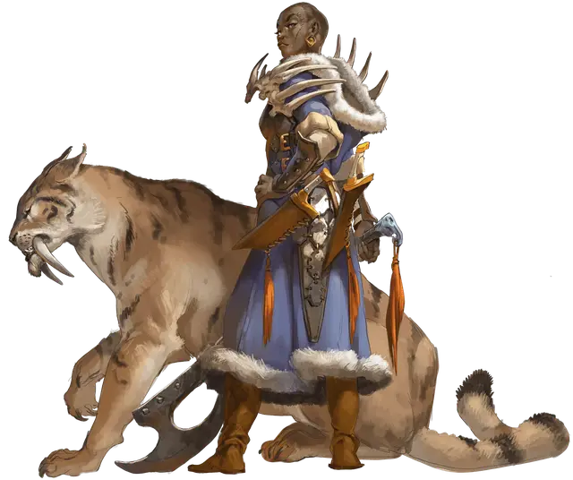

Бьёрнхильда Солвигсдоттир
Bjornhild Solvigsdottir
Средний Гуманоид (Человек), нейтрально-злой, именной НИП

Класс Доспеха 12 (шкурный доспех)
Хиты 102 (12к8 + 48)
Скорость 30 футов
| мод | спас | ||
|---|---|---|---|
| СИЛ | 18 | +4 | +4 |
| ЛОВ | 11 | +0 | +0 |
| ТЕЛ | 18 | +4 | +4 |
| мод | спас | ||
|---|---|---|---|
| ИНТ | 14 | +2 | +2 |
| МДР | 11 | +0 | +0 |
| ХАР | 14 | +2 | +2 |
Навыки Атлетика +7, Выживание +3, Запугивание +5
Чувства пассивное Восприятие 10
Языки Общий, Язык Йети
Опасность 5 (1800 опыта)
Бонус мастерства +3
Особенности
Благословение Аурил (3/день). Когда Бьёрнхильда попадает атакой оружием по существу, то причиняет дополнительно 11 (2к10) урона холодом.
Действия
Мультиатака. Бьёрнхильда совершает две рукопашные атаки.
Секира. . Рукопашная атака оружием: +7 к попаданию, досягаемость 5 фт., одна цель. Попадание: 10 (1к12 + 4) рубящего урона плюс 11 (2к10) урона холодом если Бьёрнхильда использует «Благословение Аурил».
Копьё. . Рукопашная или дальнобойная атака оружием: +7 к попаданию, досягаемость 5 фт., или дистанция 20/60 фт., одна цель. Попадание: 7 (1к6 + 4) колющего урона, или 8 (1к8 + 4) колющего урона при использовании двумя руками в рукопашной атаке, плюс 11 (2к10) урона холодом если Бьёрнхильда использует «Благословение Аурил».
Описание
Кочевники племени Тигра избегают более сильного племени Лося и нападают на более слабые племена Медведя и Волка. Из всех кочевников племя Тигра наиболее воинственно пользуется слабостями своих соперников и жителей Десяти Городов.
Королева Бьёрнхильда Солвигсдоттир
Для женщины необычно руководить племенем кочевников, но Бьёрнхильда — крайне необычная женщина. Бесстрашная жена покойного короля Корольда, она сражалась вместе с ним во многих битвах. После того, как мамонт-напарник ледяного великана убил Корольда, его место заняла грозная Бьёрнхильда.
Бьёрнхильда поклоняется Морозной Деве и настолько безжалостна, что даже враги считают, что в её венах течет настоящий лед. У неё нет живых детей, о которых она знает, но с благословения Ориль ей не понадобятся наследники, чтобы сохранить свое наследие. Бьёрнхильда намерена жить вечно, продемонстрировав свою непоколебимую веру Морозной Деве и став избранной Аурил.
Мало того, что Бьёрнхильда сама по себе внушает ужас, у неё есть саблезубый тигр [saber-toothed tiger] по кличке Грава в качестве питомца.